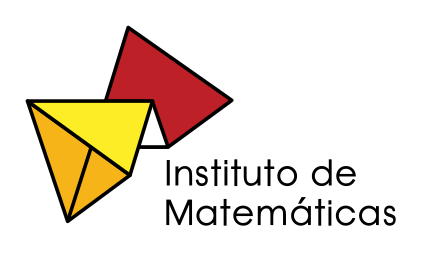

Actualización técnica y conversión de contenido

Joel Espinosa Longi
Licencia
 El contenido de esta unidad didáctica está bajo una licencia Creative Commons (Atribución-NoComercial-CompartirIgual)
El contenido de esta unidad didáctica está bajo una licencia Creative Commons (Atribución-NoComercial-CompartirIgual)
Vínculo al recurso original
http://arquimedes.matem.unam.mx/chile/R3_Probabilidad/index.html
Créditos del proyecto REFIP
Directora:
Salomé Martínez (Universidad de Chile, Centro de Modelamiento Matemático)
Director alterno:
Héctor Ramírez (Universidad de Chile, Centro de Modelamiento Matemático)
- Anita Araneda (Pontificia Universidad Católica de Chile)
- Eugenio Chandía (Universidad de Chile)
- Luis Dissett (Pontificia Universidad Católica de Chile)
- Macarena Larraín (Universidad del Desarrollo)
- Renato Lewin (Pontificia Universidad Católica de Chile)
- Alejandro López (Universidad Andrés Bello)
- Rubén López (Universidad Católica de la Santísima Concepción)
- Salomé Martínez (Universidad de Chile)
- Andrés Ortiz (Universidad Católica de la Santísima Concepción)
- Cristián Reyes (Universidad de Chile)
- Daniela Rojas (Universidad de Chile)
- Horacio Solar (Universidad Católica de la Santísima Concepción)
- María Alejandra Sorto (Texas State University)
- María Leonor Varas (Universidad de Chile)
- Pierina Zanocco (Universidad Santo Tomás)
Colaboradores:
- José Luis Abreu (Universidad Nacional Autónoma de México)
- Pablo Dartnell (Universidad de Chile)
- Joel Espinosa (Universidad Nacional Autónoma de México)
- María José García (Pontificia Universidad Católica de Chile)
- Nancy Lacourly (Universidad de Chile)
- Francisco Martínez (Universidad de Chile)
- María Victoria Martínez (Universidad de Chile)
- Josefa Perdomo (Universidad de Chile)
- Elizabeth Suazo (Universidad de Concepción)
- Rodrigo Ulloa (Universidad Católica de la Santísima Concepción)
- Claudia Vásquez (Pontificia Universidad Católica de Chile, sede Villarrica)
Asesores:
- María Aravena (Universidad Católica del Maule)
- Miguel Díaz (Sociedad Chilena de Educación Matemática)
- Patricio Felmer (Universidad de Chile)
- Arturo Mena (Pontificia Universidad Católica de Valparaíso, Sociedad Chilena de Educación Matemática)
- Raimundo Olfos (Pontificia Universidad Católica de Valparaíso)
Evaluadores:
- Guido Del Pino (Pontificia Universidad Católica de Chile)
- Pedro Gómez (Universidad de los Andes, Colombia)
- Dinko Mitrovic (Universidad de Santiago de Chile)
- Elizabeth Montoya (Pontificia Universidad Católica de Valparaíso)
- Carlos Pérez (Universidad de Concepción)
- Francisco Rojas (Pontificia Universidad Católica de Chile)
- Pierre Romagnoli (Universidad Andrés Bello)
- Marisol Valenzuela (EducaUC)